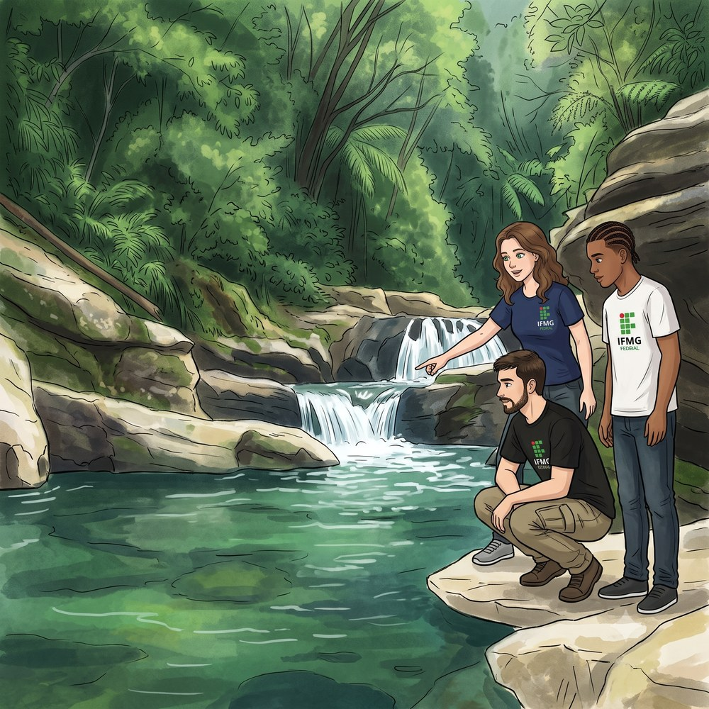
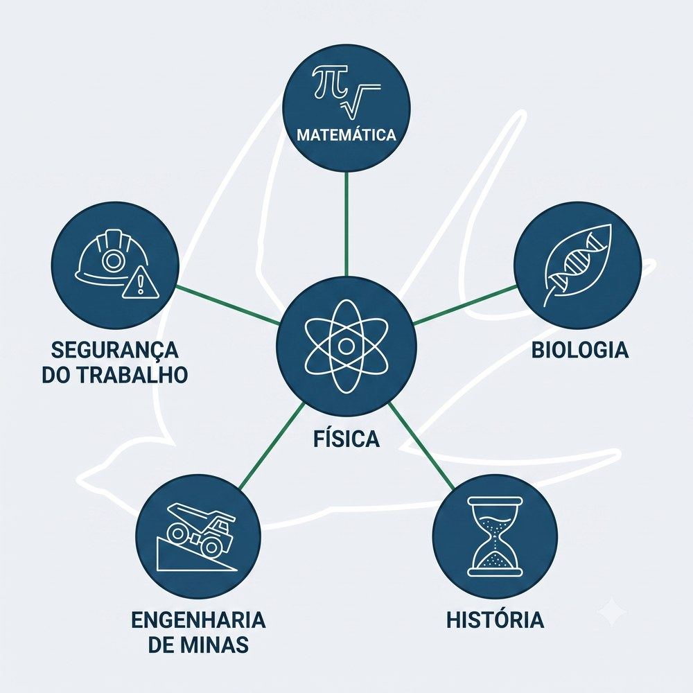
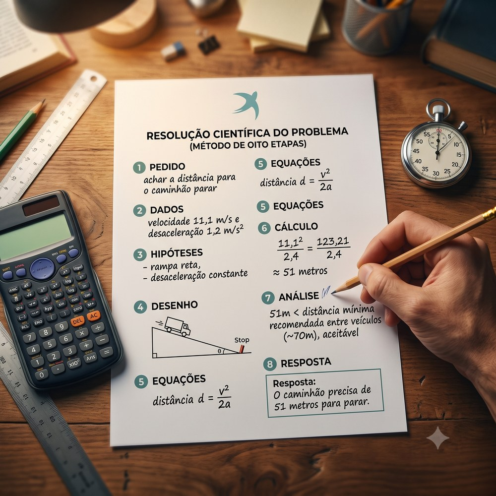

“Todos os movimentos naturais da alma são regidos por leis análogas às da gravidade material. Só a graça constitui exceção.”
A van do campus deixou a Praça Tiradentes às sete da manhã de um sábado de julho e pegou a subida pela Rua 15 de Agosto, atravessando os bairros Morro da Queimada e Morro Santana em direção ao Morro São João. Sofia ia no banco da frente com o caderno de campo no colo; Pedro, no meio, mexia no celular; Lucas, atrás, olhava a cidade encolher pela janela traseira. O Prof. Felipe dirigia devagar, porque o caminho — que no trecho final vira a Avenida das Andorinhas — sobe em curvas fechadas, e a cada arranque depois de uma parada os três eram empurrados de leve contra o encosto — e, a cada freada antes de uma curva, jogados para a frente.

— Vocês estão sentindo alguma coisa? — perguntou o professor, sem tirar os olhos da estrada.
— O banco me empurrando — respondeu Pedro. — E depois o cinto me segurando.
— Guardem essa frase. Ela vai voltar hoje.
O Parque Natural Municipal das Andorinhas fica a poucos quilômetros do centro histórico, no alto do Morro São João — a van entrou pela portaria 1, uma guarita simples de telhado cerâmico no fim da estrada de terra, entre eucaliptos altos. Criado em 1968 e com 557 hectares, o parque protege as nascentes mais altas do Rio das Velhas, o maior afluente do Rio São Francisco. Da portaria até a cachoeira são cerca de dez minutos de caminhada fácil entre campo rupestre e mata.
Os três desceram da van, passaram pela portaria e ouviram a água muito antes de vê-la. Quando chegaram ao poço, o Prof. Felipe não disse nada. Sentou-se numa pedra e deixou que olhassem.
A queda tem cerca de dez metros. E foi Lucas quem reparou primeiro.
— Olhem a água lá em cima, na beirada. Ela sai devagar, quase escorrendo. — Ele apontou para baixo. — E chega aqui embaixo estourando na pedra. É a mesma água.
Sofia acompanhou o fio d'água com o dedo e viu o que ele viu: perto da borda, o filete era grosso e lento; no meio da queda, esticava-se; perto do poço, chegava fino e veloz.
— Então ela não tem uma velocidade — disse Sofia, escrevendo depressa. — Ela tem uma velocidade em cada altura. E cada uma é maior que a anterior.
Pedro estava olhando para outro lugar. Duas andorinhas-de-coleira — as mesmas que dão nome ao parque e se abrigam na formação rochosa — cruzaram o poço em mergulho, frearam no ar quase junto à lâmina d'água e subiram de novo, num arco fechado.
— Aquilo ali também — disse ele. — Ela vinha rápido, virou e continuou rápido. Não mudou o quanto. Mudou o para onde.
O Prof. Felipe finalmente se levantou.
— Reparem no que vocês acabaram de descrever. Na van, a velocidade mudava e vocês sentiram no corpo. Na cachoeira, a velocidade muda ponto a ponto, e vocês viram com os olhos. No voo da andorinha, o número da velocidade nem mudou — mudou a direção — e ainda assim alguma coisa mudou. Na trilha passada, vocês aprenderam a medir o quão rápido a posição muda.
Ele fez uma pausa, do jeito que fazia quando queria que a pergunta ficasse.
— Agora eu pergunto: se velocidade é a taxa com que a posição muda, o que é a taxa com que a própria velocidade muda — e por que quem freia trezentas e sessenta toneladas numa rampa de cava precisa saber essa resposta antes de descer?
Sofia sublinhou a pergunta duas vezes. Ela ainda não sabia, mas tinha acabado de chegar à porta de entrada da grandeza que descreve toda mudança de movimento.

Você pode acessar o Parque de duas formas, a partir da sede do município de Ouro Preto: a primeira pela Rua 15 de Agosto, passando pelos bairros Morro da Queimada, Morro Santana e Morro São João, onde se acessa a portaria/entrada 1. A segunda forma de acesso é pela Rua Henri Gorceix, ladeira João de Paiva, passando pelo bairro São Sebastião, de onde se acessa a portaria/entrada 2.
Procure no mapa o traçado das duas subidas: nenhuma delas sobe em linha reta. Cada curva foi desenhada para transformar uma rampa íngreme demais em várias rampas suportáveis — a mesma solução que os tropeiros do século XVIII encontraram, no chão, para descer carga sem que ela ganhasse velocidade demais.
Repare também na posição do parque em relação à cidade: ele está acima dela. É dessa altitude que nasce o Rio das Velhas, e é essa mesma altitude que faz a água chegar ao poço com a velocidade que Lucas viu. Toda a Física desta trilha está contida nesses dez metros de queda.
Vale a pena ir até lá. Fique um minuto ao lado do poço e acompanhe com os olhos um único fio de água, da borda até a pedra. Você vai ver, sem nenhum instrumento, aquilo que esta trilha vai medir com números.
Antes de qualquer fórmula, é preciso aprender a ler o movimento de um veículo como quem lê uma frase. Um caminhão que arranca, um ônibus que freia e um carro que segue estável numa reta contam três histórias físicas diferentes — e o corpo de quem está dentro deles percebe as três antes de qualquer instrumento. A imagem a seguir mostra exatamente essa cena tripla na Avenida das Andorinhas.

Nas ladeiras de Vila Rica, o transporte de carga era, antes de tudo, um problema de controle de velocidade. Os carros de boi que desciam do Morro São João para o centro não tinham freio: usavam calços de madeira encostados nas rodas e a força dos animais puxando contra o movimento. Quem descia rápido demais perdia a carga na primeira curva, porque o peso empilhado seguia em frente enquanto o carro virava. Os carreiros não conheciam a palavra inércia, mas organizavam a vida em torno dela.
A velocidade de um corpo indica para onde ele vai — e, se nada agir sobre ele, é para lá que ele continuará indo, em linha reta. Essa tendência de manter o movimento chama-se inércia. Por isso, numa curva, a carga solta “sai pela tangente”: ela não é jogada para fora, ela simplesmente continua reto enquanto o veículo muda de direção. Todo movimento retilíneo de um veículo cabe em três casos: a velocidade aumenta, a velocidade diminui ou a velocidade se mantém.
Numa mina a céu aberto, essa leitura é norma escrita. As rampas de acesso à cava são projetadas com inclinação entre 8% e 10% e com curvas de raio amplo, porque um caminhão fora de estrada carregado com 360 toneladas leva dezenas de metros para mudar de velocidade. O plano de tráfego da mina, exigido pela NR-22, define distância mínima entre veículos justamente para acomodar o tempo que a velocidade leva para mudar — nunca a velocidade em si.
A velocidade aponta o caminho. Prof. Felipe pediu que os três acompanhassem a van descendo, mais tarde, a mesma avenida.
— Na reta, para onde aponta a velocidade do veículo?
— Para a frente — respondeu Pedro.
— E na curva?
Lucas pensou antes de responder.
— Para onde ele iria se a estrada acabasse ali. Para fora da curva.
— Exatamente. A velocidade sempre aponta na direção em que o corpo está indo naquele instante, e não na direção em que a estrada vai. Se a mochila do Pedro estiver solta no banco, é para lá que ela vai.
Essa é a razão física de a carga escorregar na caçamba quando o caminhão vira: a caçamba muda de direção, a carga tenta continuar reta. Não existe nenhuma força “jogando” o material para fora — existe a ausência de algo que o obrigue a virar junto.
Três movimentos, uma pergunta. Voltando ao movimento em linha reta, os três casos possíveis se organizam num quadro simples.
| Situação | O que acontece com a velocidade | Nome do movimento | O corpo sente |
|---|---|---|---|
| Van parada que arranca | Aumenta (de 0 para 36 km/h) | Retilíneo acelerado | Empurrado contra o encosto |
| Van em movimento que freia | Diminui (de 36 km/h para 0) | Retilíneo retardado (freado) | Jogado para a frente |
| Van em ritmo estável na reta | Não muda | Retilíneo uniforme | Nada — como se estivesse parado |
A terceira linha costuma surpreender. Num trecho reto e liso, a 80 km/h, é possível equilibrar uma garrafa de água no painel: o corpo não sente velocidade alguma. O que o corpo sente não é a velocidade — é a mudança dela. Esse é o ponto de partida de toda esta trilha.
Para descrever essa mudança, a Física precisa antes nomeá-la.
| Símbolo | Grandeza | Unidade SI |
|---|---|---|
| Δv | Variação de velocidade | m/s (metro por segundo) |
| v | Velocidade final (no instante t) | m/s |
| v0 | Velocidade inicial (no instante t0) | m/s |
O sinal de Δv já diz tudo o que o corpo sentiu: positivo quando a velocidade cresce no sentido adotado, negativo quando ela diminui. Falta apenas dividir essa mudança pelo tempo que ela levou.
Duas vans podem sair do repouso e chegar aos mesmos 36 km/h — uma em 8 segundos, outra em 40. A mudança de velocidade é idêntica; a experiência dentro do veículo, completamente diferente. A grandeza que separa esses dois casos é o assunto deste tópico. A imagem a seguir monta essa grandeza como uma fração: o velocímetro (em km/h) sobre o cronômetro (em segundos) — é da razão entre a variação de um e a variação do outro que nasce a aceleração média.

Galileu Galilei foi o primeiro a tratar a mudança de velocidade como uma grandeza mensurável. Sem relógios precisos, usou planos inclinados para “diluir” a queda no tempo e mediu intervalos com um relógio de água. Descobriu que, na queda, o que permanece constante não é a velocidade, mas a taxa com que ela cresce — resultado publicado em 1638, nos Discursos e Demonstrações Matemáticas sobre Duas Novas Ciências. Foi a primeira vez que alguém mediu a “mudança da mudança”.
Aceleração escalar média é a razão entre a variação de velocidade de um corpo e o intervalo de tempo em que ela ocorreu. Sua unidade no Sistema Internacional é o metro por segundo, por segundo — m/s². Lê-se assim: quantos metros por segundo de velocidade o corpo ganha (ou perde) a cada segundo. Como Δt é sempre positivo, o sinal da aceleração é sempre o sinal de Δv.
Toda especificação de equipamento de transporte na mineração traz aceleração, não velocidade. O freio retardador hidráulico de um caminhão fora de estrada é especificado pela desaceleração que garante em rampa carregada; a gaiola de um poço de mina é especificada pela aceleração de arranque que os trabalhadores suportam sem desconforto. A velocidade máxima diz o que o equipamento alcança; a aceleração diz o que ele consegue mudar.
Do conceito à fórmula. Prof. Felipe escreveu no quadro os números da própria van.
— Saímos do repouso e chegamos a 36 km/h em 8 segundos. Quanto de velocidade ganhamos por segundo?
Pedro dividiu de cabeça: 10 metros por segundo em 8 segundos dá 1,25 metro por segundo a cada segundo.
— Esse número tem nome — disse o professor.
| Símbolo | Grandeza | Unidade SI |
|---|---|---|
| am | Aceleração escalar média | m/s² (metro por segundo ao quadrado) |
| Δv | Variação de velocidade | m/s |
| Δt | Intervalo de tempo | s (segundo) |
A leitura em voz alta ajuda a fixar o significado: mais um vírgula vinte e cinco metro por segundo, a cada segundo. Ao fim do primeiro segundo, a van andava a 1,25 m/s; ao fim do segundo, a 2,5 m/s; ao fim do oitavo, a 10 m/s. A aceleração não é uma velocidade grande: é uma regra de crescimento da velocidade.
Note também a simetria com a trilha anterior. Ali, velocidade média era Δs/Δt — a taxa de variação da posição. Aqui, aceleração média é Δv/Δt — a taxa de variação da velocidade. É a mesma operação aplicada um degrau acima.
O sinal da velocidade e o sinal da aceleração. Adotado um referencial, a velocidade carrega sinal: v positiva significa que o móvel se afasta da origem no sentido adotado como positivo (o móvel “vai”); v negativa significa que ele caminha no sentido oposto, aproximando-se da origem (o móvel “vem”). A aceleração carrega sinal pela mesma razão — mas o que ela significa depende de com quem está.
Aqui está o ponto em que quase todo estudante escorrega, e por isso ele merece um aviso explícito:
| Condição | Significado físico |
|---|---|
| v e a com o mesmo sinal | O módulo da velocidade aumenta — movimento acelerado |
| v e a com sinais opostos | O módulo da velocidade diminui — movimento retardado |
| a = 0 | O módulo da velocidade não muda — movimento uniforme |
| v | a | Produto v·a | Movimento | Exemplo no parque |
|---|---|---|---|---|
| + | + | > 0 | Acelerado (indo, mais rápido) | Van arrancando morro acima |
| + | − | < 0 | Retardado (indo, mais devagar) | Van freando antes da curva |
| − | − | > 0 | Acelerado (vindo, mais rápido) | Van descendo de volta, ganhando velocidade |
| − | + | < 0 | Retardado (vindo, mais devagar) | Van descendo e freando na entrada da cidade |
| ± | 0 | = 0 | Uniforme | Trecho reto e estável da avenida |
Sofia leu o quadro duas vezes e apontou para a terceira linha.
— Essa é a que engana. Tudo negativo, e mesmo assim está acelerando.
— Porque “negativo” só informa o sentido — respondeu o professor. — Quem informa se o movimento aumenta ou diminui é a comparação entre os dois sinais, nunca um deles sozinho.
A aceleração média de uma freada de 4 segundos é um número só: ele resume os quatro segundos inteiros. Mas o corpo do passageiro não sente médias — sente o que está acontecendo agora, e o pior momento de uma freada não é igual ao seu valor médio. A imagem a seguir mostra o gráfico do acelerômetro do celular de Pedro durante a descida, com o pico exato do instante em que o professor pisou no freio.

A ideia de uma taxa “no instante” foi o problema central do século XVII e só se resolveu com o cálculo diferencial, desenvolvido de forma independente por Isaac Newton e Gottfried Leibniz. Newton chamava essas taxas de fluxões — literalmente, o quanto uma grandeza flui a cada momento. A aceleração instantânea foi a segunda fluxão da posição: a taxa da taxa. Foi essa ferramenta que permitiu passar da descrição de trajetórias à previsão delas.
Aceleração instantânea é o limite da aceleração média quando o intervalo de tempo tende a zero. Na prática, é a aceleração calculada sobre um intervalo tão curto que reduzi-lo mais não muda o resultado. É essa — e não a média — a grandeza que o corpo humano percebe, porque o que o corpo sente é a força necessária para mudar sua própria velocidade naquele momento.
Acelerômetros embarcados são item obrigatório na telemetria de frotas de mineração. Eles registram picos instantâneos de desaceleração que denunciam frenagem brusca, e é sobre esses picos — não sobre a média do ciclo — que atua a análise de risco. O mesmo sensor de três eixos que existe no celular do estudante existe, em versão industrial, no painel de um caminhão de 360 toneladas.
Encolhendo o intervalo. Prof. Felipe repetiu com a aceleração o exercício que a turma já conhecia da velocidade. Durante a freada de 4 segundos, ele pediu que calculassem a aceleração média em intervalos cada vez menores, todos centrados no instante mais forte da freada.
| Δt | Δv correspondente | am calculada |
|---|---|---|
| 4,0 s | −10,0 m/s | −2,50 m/s² |
| 2,0 s | −7,2 m/s | −3,60 m/s² |
| 1,0 s | −4,0 m/s | −4,00 m/s² |
| 0,5 s | −2,08 m/s | −4,16 m/s² |
| 0,1 s | −0,42 m/s | −4,20 m/s² |
— Reparem — disse o professor. — Os valores convergem. A partir de certo ponto, encolher mais o intervalo já não muda a resposta. Esse valor-limite é a aceleração instantânea.
| Símbolo | Grandeza | Unidade SI |
|---|---|---|
| a | Aceleração instantânea | m/s² |
| Δv | Variação de velocidade no intervalo | m/s |
| Δt → 0 | Intervalo de tempo tendendo a zero | s |
Esse é o motivo de a média enganar. Ela distribui a freada inteira por igual, incluindo o começo suave e o fim quase parado. O passageiro, porém, não é jogado para a frente “em média”: ele é jogado no instante do pico.
O que o corpo sente. Pedro abriu o aplicativo de sensores do celular e mostrou a tela. O acelerômetro registra, a cada centésimo de segundo, a aceleração nos três eixos — e é por isso que o aparelho sabe quando foi virado, quando caiu e quantos passos você deu.
— Ele mede a aceleração instantânea — confirmou o Prof. Felipe. — Com o celular parado sobre a mesa, ele marca 9,8 m/s² para cima. Guardem esse número: ele volta no próximo tópico.
Para dar escala à sensação, o professor montou um quadro comparativo usando como referência o valor de g = 9,8 m/s².
| Situação | Aceleração aproximada | Em unidades de g | Sensação |
|---|---|---|---|
| Elevador partindo | 1,0 m/s² | 0,1 g | Leve peso a mais nos pés |
| Van arrancando na subida | 1,25 m/s² | 0,13 g | Encosto empurrando as costas |
| Freada firme de carro urbano | 4,2 m/s² | 0,43 g | Cinto marcando o ombro |
| Frenagem de emergência | 8,0 m/s² | 0,8 g | Corpo projetado, objetos soltos voam |
| Abertura do paraquedas | 17 m/s² | 1,7 g | Puxão forte nos ombros e pernas |
| Montanha-russa (alça) | 29 m/s² | 3,0 g | Peso triplicado, visão escurece nas bordas |
— Agora entendem por que a NR-22 limita velocidade em rampa? — perguntou o professor. — Não é a velocidade que machuca. É a aceleração necessária para tirá-la de você em pouco tempo.
Lucas anotou a frase inteira.
A cachoeira que Lucas observou é uma queda de dez metros. Um salto de paraquedas é uma queda de quatro mil. Entre uma e outra está o fenômeno que transforma a queda numa das histórias mais bonitas da Física: a velocidade não cresce para sempre. A imagem a seguir mostra os três trechos do salto, do primeiro segundo à aterrissagem.

Até o século XVI, ensinava-se que corpos pesados caem mais depressa que leves — tese aristotélica que atravessou dois mil anos. Galileu argumentou o contrário e mostrou que, retirado o efeito do ar, todos os corpos caem com a mesma aceleração, independentemente da massa. A verificação mais espetacular veio em 1971, quando o astronauta David Scott soltou um martelo e uma pena na superfície da Lua, sem atmosfera, e os dois tocaram o solo juntos, diante das câmeras da Apollo 15.
Perto da superfície da Terra, todo corpo em queda sofre a mesma aceleração da gravidade, g ≈ 9,8 m/s², dirigida para baixo. A queda livre é o caso ideal em que apenas a gravidade age. Na atmosfera real, porém, o ar oferece resistência, e essa resistência cresce com a velocidade: chega um momento em que ela equilibra o peso, a aceleração se anula e a velocidade para de crescer — é a velocidade limite, ou terminal.
A queda livre é, na mineração, um cenário de risco e não de curiosidade. A NR-22 exige sistemas de retenção em poços e proteção contra queda de materiais em bancadas, precisamente porque a velocidade de um objeto em queda cresce cerca de 10 m/s a cada segundo: uma pedra que escapa de uma bancada de 20 metros chega ao piso a cerca de 70 km/h. É também por isso que os cabos de gaiola trabalham com coeficiente de segurança elevado: uma queda livre no poço não perdoa.
O primeiro trecho: a velocidade cresce. Ao saltar do avião, o paraquedista parte praticamente do repouso vertical. No primeiro segundo, ganha cerca de 10 m/s; no segundo, outros 10; e assim por diante — enquanto a resistência do ar ainda for pequena.
| Símbolo | Grandeza | Unidade SI |
|---|---|---|
| v | Velocidade no instante t | m/s |
| g | Aceleração da gravidade | m/s² (≈ 9,8 na superfície da Terra) |
| t | Tempo de queda | s |
| Δs | Distância percorrida na queda | m |
Sofia olhou o resultado e entendeu o que tinha visto: o fio d'água afina na descida porque acelera. A mesma quantidade de água, passando mais depressa, ocupa menos seção.
O segundo trecho: a velocidade limite. Se a gravidade agisse sozinha, um paraquedista em queda de 4.000 metros chegaria ao solo a mais de 1.000 km/h. Não é o que acontece — e a razão é o ar.
A resistência do ar aponta contra o movimento e cresce com a velocidade. À medida que o paraquedista acelera, a resistência aumenta, e a aceleração resultante diminui. Quando a resistência iguala o peso, a aceleração se anula.
| Símbolo | Grandeza | Unidade SI |
|---|---|---|
| a | Aceleração instantânea do corpo | m/s² |
| vlimite | Velocidade limite (terminal) | m/s |
Esse é o exemplo mais didático de toda a trilha, porque separa definitivamente as duas ideias. Aos 200 km/h, o paraquedista tem velocidade enorme e aceleração nula — e, exatamente por isso, não sente nada além do vento. Velocidade grande não é sinônimo de aceleração grande.
O terceiro trecho: a abertura do paraquedas. O paraquedas multiplica de uma só vez a área exposta ao ar. A resistência salta muito acima do peso, e a velocidade despenca em poucos segundos.
| Trecho | O que acontece | v | a | Classificação |
|---|---|---|---|---|
| 1 — Queda inicial (0 a 12 s) | Velocidade cresce; resistência ainda pequena | 0 → 55 m/s | ≈ +9,8 → 0 m/s² | Acelerado |
| 2 — Velocidade limite (12 s até a abertura) | Resistência iguala o peso | 55 m/s constante | 0 | Uniforme |
| 3 — Abertura do paraquedas (≈ 3 s) | Resistência supera muito o peso | 55 → 5 m/s | ≈ −17 m/s² | Retardado |
O cálculo do trecho 3 usa a Equação 2, aplicada agora a uma desaceleração: am = (5 − 55) / 3,0 = −16,7 m/s² — cerca de 1,7 g, o puxão que aparece no Quadro 4.
— Repare no sinal — completou o Prof. Felipe. — Adotando a descida como sentido positivo, a velocidade é positiva e a aceleração, negativa. Sinais opostos: movimento retardado. É a terceira coluna do Quadro 2, agora a mil metros do chão.
Fora da sala de aula, aceleração deixa de ser uma grandeza a calcular e passa a ser um limite a respeitar. Freio de emergência, arranque de gaiola e rotação de centrífuga são três equipamentos completamente diferentes que respondem à mesma pergunta: quanto de velocidade se pode mudar, e em quanto tempo. A imagem a seguir mostra os três lado a lado.

Na Mina da Passagem, em Mariana, a gaiola do poço descia mais de cem metros movida por cabo de aço e máquina a vapor. A aceleração de arranque e a desaceleração de parada eram sentidas no corpo dos trabalhadores e ajustadas “no ouvido” pelo operador do guincho. Não havia medida: havia experiência. O rompimento de cabo — queda livre no poço — foi a principal causa de morte em minas de poço no Brasil até a regulamentação da NR-22, em 1978.
Toda mudança de velocidade exige tempo e espaço, e os dois se relacionam com a aceleração de forma previsível. Conhecida a desaceleração máxima que um sistema de freio garante, é possível calcular exatamente a distância mínima em que um veículo consegue parar. Além disso, aceleração não é privilégio do movimento retilíneo: um corpo que gira com módulo de velocidade constante está acelerado, porque a direção da velocidade muda o tempo todo.
O caminhão fora de estrada CAT 797F transporta cerca de 360 toneladas em rampas de 8% a 10%. Na descida, quem controla a velocidade não é o freio de serviço, e sim o retardador hidráulico, capaz de manter uma desaceleração da ordem de 1,2 m/s² sem superaquecer. O plano de tráfego da mina converte esse número em distância mínima entre veículos — e é essa conversão que separa um turno normal de um acidente grave.
Freios: da desaceleração à distância. Prof. Felipe trouxe o caso real da rampa.
— Um caminhão carregado desce a 40 km/h. O retardador garante 1,2 m/s². Quantos metros ele precisa para parar?
| Símbolo | Grandeza | Unidade SI |
|---|---|---|
| Δs | Distância percorrida até parar | m |
| v | Velocidade no início da frenagem | m/s |
| |a| | Módulo da desaceleração | m/s² |
Pedro fez a conta seguinte sozinho e ficou pálido.
— Se ele descer a 60 em vez de 40, a velocidade sobe 50%… mas a distância vai para 116 metros. Mais que o dobro.
— Porque a velocidade entra ao quadrado — confirmou o professor. — É por isso que os limites em rampa são tão baixos e tão inegociáveis. Quem aumenta a velocidade em metade, mais que dobra o espaço necessário para parar.
Gaiolas: a aceleração que o corpo aceita. No poço, o problema é oposto. Não se trata de parar rápido, e sim de partir e chegar com suavidade suficiente para que ninguém se machuque dentro da gaiola.
| Equipamento / operação | Grandeza controlada | Valor típico | Por que esse limite |
|---|---|---|---|
| Caminhão fora de estrada (subida carregado) | Aceleração | ≈ +0,15 m/s² | Potência disponível com 360 t em rampa de 10% |
| Retardador hidráulico (descida) | Desaceleração | ≈ −1,2 m/s² | Limite térmico do sistema em descida contínua |
| Frenagem de emergência em rampa | Desaceleração | ≈ −3,0 m/s² | Risco de perda de aderência e de deslocamento da carga |
| Gaiola de poço — arranque | Aceleração | ≈ +0,5 m/s² | Conforto e segurança dos trabalhadores transportados |
| Gaiola de poço — parada normal | Desaceleração | ≈ −0,6 m/s² | Evitar oscilação do cabo e do estrado |
Uma gaiola que parte com +0,5 m/s² leva 6 segundos para atingir sua velocidade de regime de 3,0 m/s — e percorre 9 metros só nesse arranque. Numa descida de 120 metros, isso significa que arranque e parada, somados, consomem quase 20 metros do percurso. O tempo de ciclo do poço depende tanto da aceleração quanto da velocidade final.
Centrífugas: acelerar sem mudar de rapidez. No laboratório de beneficiamento, a centrífuga separa partículas de minério por densidade. O tubo gira em círculo com rapidez praticamente constante — e, ainda assim, está permanentemente acelerado, porque a direção da velocidade muda a cada instante. É a andorinha de Pedro, na versão industrial.
| Símbolo | Grandeza | Unidade SI |
|---|---|---|
| ac | Aceleração centrípeta (aponta para o centro) | m/s² |
| v | Módulo da velocidade do corpo em rotação | m/s |
| r | Raio da trajetória circular | m (metro) |
Lucas fechou o caderno com uma observação que o Prof. Felipe pediu para repetir alto:
— Então “acelerar” não é só ir mais rápido. É qualquer mudança na velocidade — no tamanho dela ou na direção dela.
Às cinco e meia da tarde, antes de embarcar de volta, o Prof. Felipe concedeu uma última parada: o mirante de pedra na borda do platô, onde uma laje de quartzito avança sobre o vale como a proa de um navio. Dali os três olharam em silêncio a serra se abrir, morro atrás de morro, até o horizonte — e a luz que de manhã vinha rasante sobre o campo rupestre agora batia alaranjada nos telhados de Ouro Preto, lá embaixo. Depois a van desceu de volta ao centro. Sofia ia com o caderno fechado sobre os joelhos; Pedro tinha o celular no colo, com o gráfico do acelerômetro ainda aberto; Lucas olhava o parque ficar para trás pela janela traseira, do mesmo jeito que, de manhã, tinha olhado a cidade.
— Uma última pergunta — disse o Prof. Felipe, engatando a descida. — Nós subimos e descemos o mesmo morro hoje. A velocidade média do dia de vocês foi zero, como na trilha passada. E a aceleração média?
Pedro pensou. Sofia respondeu antes.
— Também zero. A gente saiu parado e voltou parado. Δv igual a zero.
— E, mesmo assim — completou Lucas —, a gente sentiu o dia inteiro.
O professor sorriu.
— É esse o resumo da trilha. A média apaga tudo o que aconteceu no meio. O que empurrou vocês contra o banco, o que jogou vocês para a frente, o que faz a água chegar ao poço a cinquenta por hora e o que faz um paraquedas doer nos ombros — nada disso está na média. Está no instante.
Aceleração média: a variação de velocidade dividida pelo intervalo de tempo, um número que resume uma mudança inteira. Aceleração instantânea: o mesmo cálculo levado ao limite, um número que descreve um único momento. E entre os dois, a regra que evita o erro mais comum de toda a cinemática: o sinal da aceleração só significa alguma coisa quando lido junto com o sinal da velocidade.
Na próxima trilha, o caso mais simples de todos ganha nome próprio: o movimento em que a aceleração é exatamente zero e a velocidade não muda nunca — o Movimento Uniforme. Depois dele vem aquele em que a aceleração é constante e diferente de zero, e a queda do paraquedista de hoje aparecerá inteira, com equação e gráfico. O que hoje foi sensação, amanhã será previsão.
Cinco problemas que conectam a Física com outras áreas do conhecimento técnico e científico. Cada problema exige análise, síntese ou avaliação — Bloom L4 a L6.

Quando a Física se encontra com outra disciplina, o caminho até a resposta segue oito etapas — sempre as mesmas. Esse protocolo chama-se Componente 5 e é o método que técnicos de mineração usam para resolver problemas reais. Pratique-o aqui: você vai reaplicá-lo integralmente no Trabalho (TR) desta trilha.

| Etapa | Nome | O que fazer |
|---|---|---|
| 1 | O que está sendo pedido? | Releia o enunciado. Escreva com suas próprias palavras o que é pedido. |
| 2 | Quais são os dados? | Liste cada grandeza com seu símbolo, valor e unidade. |
| 3 | Quais são as hipóteses? | Declare o que você vai assumir (trajetória retilínea, aceleração constante etc.). |
| 4 | Qual é o desenho do problema? | Faça um esboço, diagrama ou esquema simples da situação. |
| 5 | Quais são as equações? | Identifique a equação do TT. Isole algebricamente a variável pedida. |
| 6 | Cálculo com unidades | Substitua os valores. Acompanhe as unidades passo a passo até o resultado. |
| 7 | Análise de resultados | O resultado faz sentido? Compare com valores típicos da mineração. |
| 8 | Responda o que foi pedido | Escreva a resposta completa, com unidade e interpretação no contexto. |
Um paraquedista salta e atinge a velocidade limite de 55 m/s após 12 s de queda. Ao abrir o paraquedas, sua velocidade cai para 5,0 m/s em 3,0 s. Determine (a) a aceleração média do primeiro trecho, (b) a aceleração no trecho de velocidade limite e (c) a aceleração média na abertura, expressa também em unidades de g. Explique por que o corpo humano suporta bem o trecho (b), em que a velocidade é máxima, e sofre no trecho (c).
Resolução Científica do Problema
Um estudante afirmou: “aceleração negativa significa que o veículo está freando”. Avalie a afirmação usando o caso de um caminhão que desce a rampa de cava no sentido negativo do eixo adotado, passando de −8,0 m/s para −11,0 m/s em 6,0 s. Calcule a aceleração média, classifique o movimento e proponha um critério matemático geral que substitua a regra do estudante.
Resolução Científica do Problema
O retardador hidráulico de um caminhão fora de estrada garante desaceleração de 1,2 m/s² com carga plena. O plano de tráfego pretende elevar a velocidade de descida de 40 km/h para 50 km/h. Determine a distância de frenagem em cada caso e avalie o impacto sobre a distância mínima entre veículos, hoje fixada em 70 m.
Resolução Científica do Problema
Uma gaiola de poço transporta trabalhadores por 120 m de profundidade. Parte do repouso com aceleração de 0,50 m/s² até atingir 3,0 m/s, mantém essa velocidade e freia com 0,60 m/s² até parar. Determine o tempo total da descida e avalie se a redução do trecho uniforme seria uma forma segura de encurtar o ciclo.
Resolução Científica do Problema
Na Mina da Passagem, no século XIX, a gaiola descia por cabo acionado por máquina a vapor. Documentos da época registram descidas de 100 m em cerca de 40 s. Estime a velocidade média da descida e compare com a gaiola moderna do problema anterior. Em seguida, avalie o cenário de ruptura de cabo: quanto tempo levaria a queda livre desses mesmos 100 m e com que velocidade a gaiola atingiria o fundo?
Resolução Científica do Problema
Em 1913, num ateliê de Milão, Umberto Boccioni modelou em gesso uma figura humana em passada larga. A obra tem cerca de um metro e vinte de altura e não representa um corpo: representa o rastro de um corpo. As pernas se abrem em superfícies que parecem esculpidas pelo próprio ar; os músculos das coxas se prolongam para trás como chamas; o tronco avança e, ao mesmo tempo, deixa para trás lâminas do que ele era um instante antes. Não há cabeça reconhecível, não há braços. Há velocidade transformando a matéria.
O que Boccioni tentava esculpir era precisamente o assunto desta trilha. Uma escultura clássica mostra um estado: o corpo parado nesta pose. A dele mostra uma transição — a figura já não está onde estava e ainda não está onde vai chegar. É a diferença entre fotografar a posição e fotografar a mudança, entre o Tópico 2 e o Tópico 3: a média, que resume o percurso, e o instante, que mostra o que está acontecendo agora.
Há ainda um detalhe que fecha o ciclo. Boccioni morreu em 1916, aos 33 anos, ao cair de um cavalo durante um exercício militar — vítima, ironicamente, da mesma aceleração que passou a vida tentando esculpir. A obra em bronze foi fundida postumamente e hoje estampa a moeda italiana de 20 centavos de euro: um objeto sobre a mudança do movimento circulando, todos os dias, nos bolsos de milhões de pessoas.

“É o artista que é verdadeiro, e é a fotografia que mente; pois, na realidade, o tempo não para.”
BONJORNO, J. R. Identidade Saraiva: Física. São Paulo: Saraiva, 2024.
MÁXIMO, A. et al. Física: contexto & aplicações. São Paulo: Scipione, 2013.
TALAVEIRA, A. C. et al. Física: ensino médio, v. único. São Paulo: Nova Geração, 2005.
BLOOM, Benjamin S. (org.). O desenvolvimento de talentos na juventude. Porto Alegre: Globo, 1988.
HEWITT, Paul G. Física conceitual. 12. ed. Porto Alegre: Bookman, 2015.
NICOLELIS, Miguel. O verdadeiro criador de tudo: como o cérebro humano esculpiu o universo que conhecemos. São Paulo: Planeta, 2020.
PIAZZI, Pierluigi. Aprendendo inteligência: manual de instruções do cérebro para estudantes em geral. São Paulo: Aleph, 2008.
PIAZZI, Pierluigi. Inteligência em concursos: manual de instruções do cérebro para concurseiros e universitários. São Paulo: Aleph, 2013.
Estas Trilhas de Aprendizagem são concebidas, dirigidas e revisadas por uma equipe humana — autor, coautor, colaboradores, monitores e a equipe do Núcleo de Inovação e Desenvolvimento de Experimentos Científicos (NIDEC) e equipe da Coordenadoria da Área de Física (CODAFIS).
A inteligência artificial entra no processo como ferramenta, nunca como autora: é usada sob curadoria humana, com princípios claros, diretrizes pedagógicas explícitas e honestidade intelectual.
Assim, declaramos abertamente o uso de IA como assistente de redação e diagramação de todos os Objetos de Aprendizagem (Claude Opus 5 e Claude Cowork, Anthropic, 2026; Gemini Notebook, Google, 2026), do mesmo modo que se declara o uso de qualquer ferramenta de autoria.